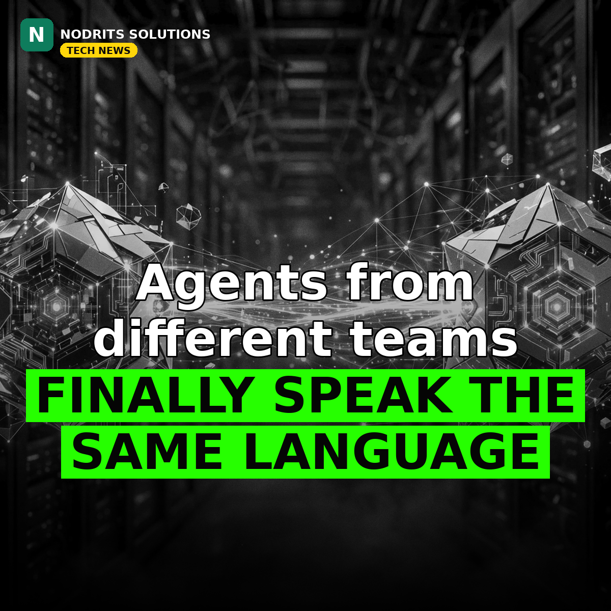

Google's Agent Kit Goes Stable — A2A Is Now a Production API

Agents from different teams can finally talk to each other on a stable API. Google published the Agent Development Kit Python v2.14.0 release tag on November 7, 2026, graduating execution environments, A2A agent-to-agent integration, evaluation and core runtime modules from experimental to stable.
What happened
Google's ADK Python v2.14.0 release (dated November 4, tag published November 7) graduates 26 auth, environment, app, CLI and cache modules plus 16 toolset and integration features to stable. The stable execution environments include local, Daytona and E2B backends. New in the release: a TeamsRunner that connects ADK agents to Microsoft Teams chats and channels, a MultiRunConfig that runs each evaluation case multiple times concurrently, a MongoDB memory service with vector-search retrieval and TTL expiration, and an adk generate_agent_card command that builds an A2A agent card from the CLI. Google claims a 30-node workflow running 200 turns is 23 percent faster with 9 percent lower peak memory in this release — and publishes no baseline hardware, comparison version or second benchmark to check that claim against.
Why it matters
Agent-to-agent communication graduating matters because cross-agent work — one agent handing a task to another agent built by a different team — needs a protocol both sides can depend on not changing next month. Stable status is Google saying these surfaces are now a baseline you can build production plans on. It is not, by itself, a guarantee that any given application is production-ready; your own security and reliability checks still decide that. The agent race is quietly shifting from who has the smartest model to who has the most dependable plumbing — and A2A becoming a stable API is the plumbing going in.
What it means for you
If you build with ADK, pin 2.14.0 and move any experimental-environment or A2A code onto the stable surfaces while the migration is still small. Generate an agent card for one existing agent with the new CLI command — it is the cheapest way to see what your agent advertises to other agents. And treat the 23 percent speed claim as untested until you have benchmarked your own workflow: Google did not publish the setup you would need to reproduce it.
The Nodrits take
Nobody screenshots a stability graduation. But stable APIs are what turn demos into products. When two AI agents from different teams have to work together, who should set the rules — the platform, or the builders? Tell us in the comments on today's post.
Need a website, SaaS product or AI workflow built right?
Nodrits Solutions designs, develops and automates for businesses in Pakistan, the USA, UK, UAE and Saudi Arabia.
Talk to Nodrits →Sources: Google ADK Python v2.14.0 release notes via DEV (November 7, 2026); AIFreshSignal briefing (November 8, 2026). The 23 percent faster / 9 percent lower memory figures are Google's claims, with no published baseline.. Published November 9, 2026.